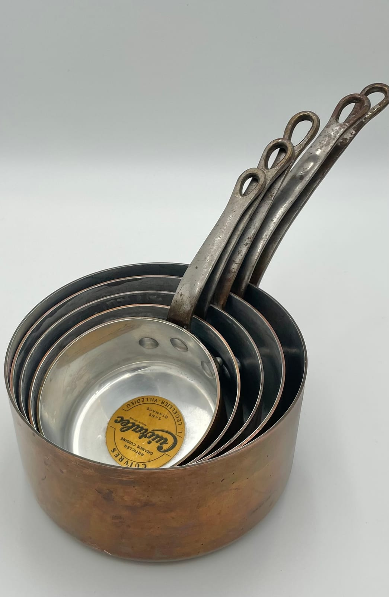
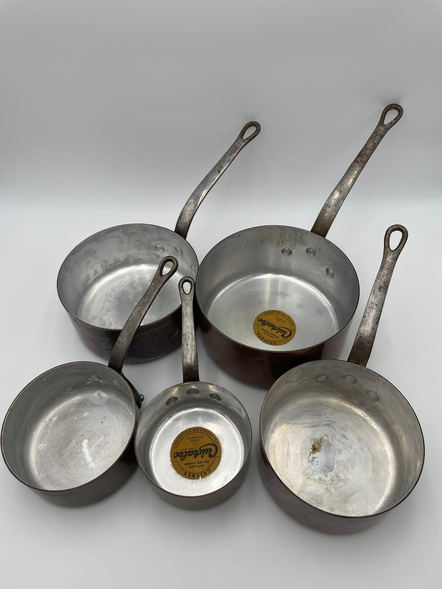
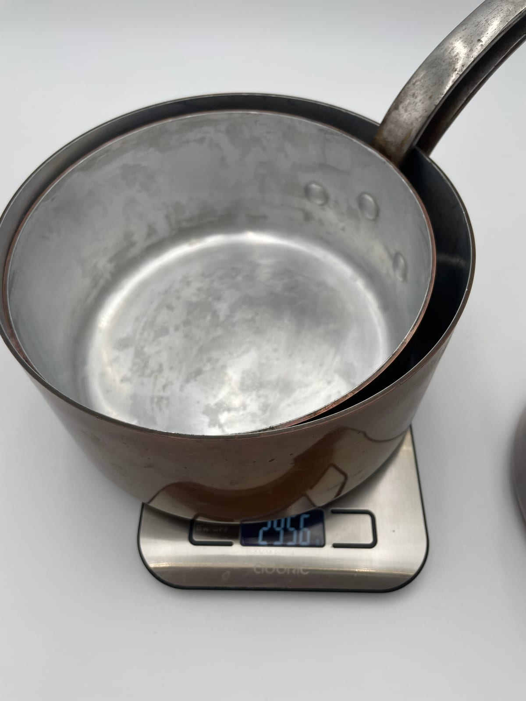
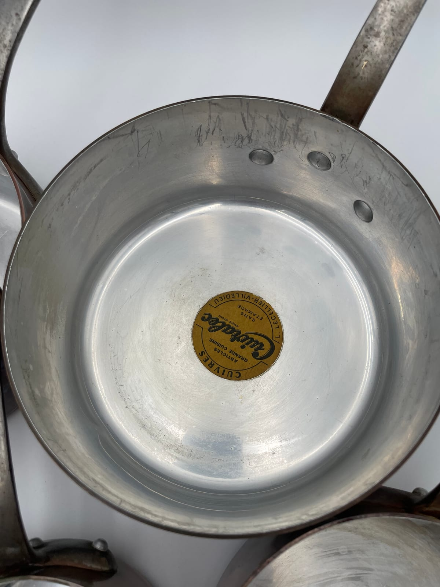
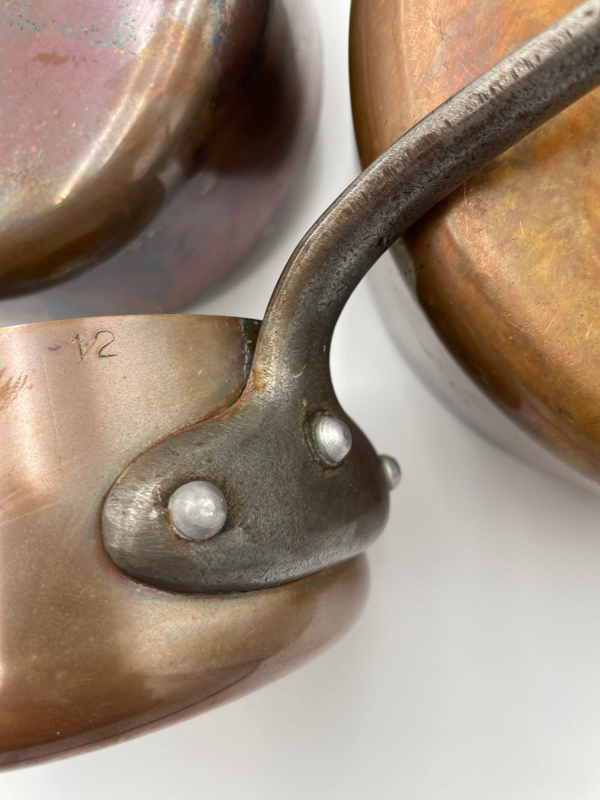
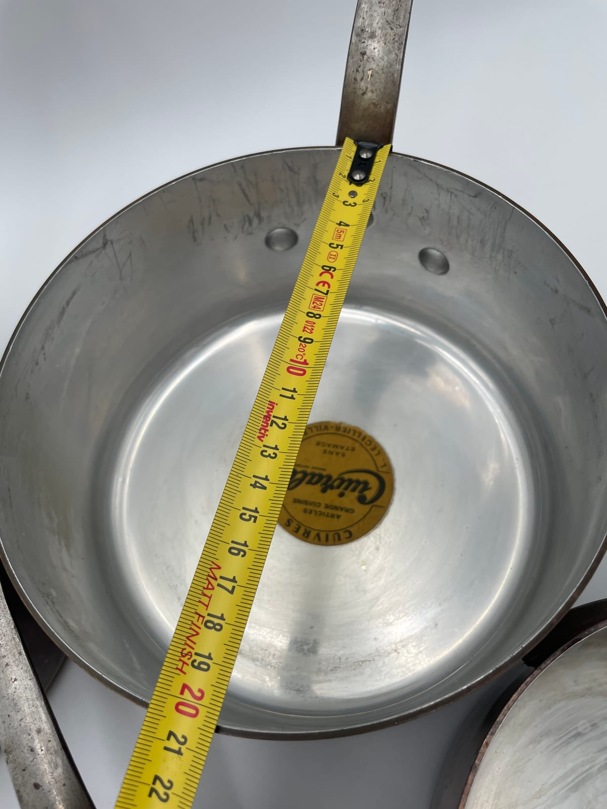
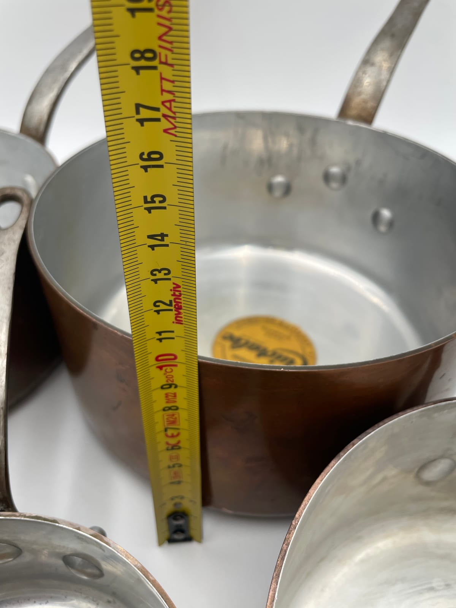
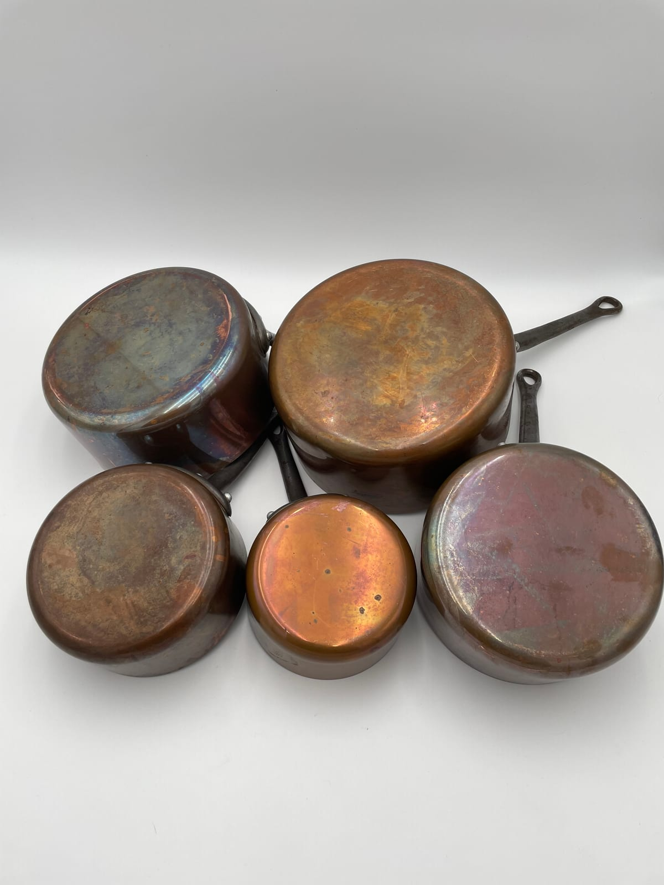

Graduated Set of Five L. Lecellier "Cuivralec" Copper Saucepans, 12–20 cm, Villedieu-les-Poêles, France
550€
No online payment: we reply personally to confirm availability, shipping and payment.
A graduated run of five copper saucepans from L. Lecellier of Villedieu-les-Poêles, the Norman town whose name has been synonymous with copperwork for centuries, sold under the firm's registered "Cuivralec" trademark. The sizes step evenly from 12 to 20 cm in approximately 1.5 mm copper, each with an iron handle secured by three rivets — a working progression for the stove rather than a display arrangement. What sets this set apart is the survival of its original paper labels, still inside the largest and smallest pans — both of which have never been used, which record how the pieces were sold: as "articles grande cuisine", and explicitly "sans étamage" — without tinning. Labels like these are usually the first thing to be lost, and here they preserve the manufacturer's own description on the objects themselves.
- Maker
- L. Lecellier (Cuivralec)
- Origin
- Villedieu-les-Poêles, Normandy, France
- Materials
- Copper (approx. 1.5 mm), untinned interior as stated on the original labels, iron handles fixed with three rivets
- Dimensions
- Five saucepans, diameters 12, 14, 16, 18 and 20 cm. Weight: the two largest together 2.956 kg; the three smallest together 2.561 kg (5.517 kg for the set)
- Marks & signatures
- Round 'L. LECELLIER / Cuivralec / VILLEDIEU' stamp beside the size '20' on the largest saucepan; size numbers stamped on the others. The largest (20 cm) and smallest (12 cm) saucepans retain their original paper labels inside: 'Cuivres · Articles Grande Cuisine · Cuivralec · Marque Déposée · Sans Étamage · L. Lecellier – Villedieu'
- Condition
- Good vintage condition. The 12 cm and 20 cm saucepans are unused, with their original labels in place. The three others show signs of use, including dull patches and marks on the interior bases. Exteriors with natural copper patina, iridescent heat colouring and light marks; iron handles with surface oxidation; rivets sound (see photographs).